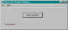

Write Tymeac Statistics,
com.tymeac.client.jframe.TyStats
This frame class requests On-Request Statistics of the
Tymeac Server environment.
The non-frame version of this class is TyStatsClient, below.
 (click to link to full image)
Buttons
Write Statistics -- Press to request On_request Statistics of the
Tymeac Server environment.
Message Block at bottom : -- This is an information message:
(0) Connection failure -- The RMI connection failed or the
Tymeac Server returned an invalid message.
(2) DBMS Table / local file / class is not available -- There is no Stats Repository for this session. Either the Configuration File does not specify a Statistics Table, Local File
or Alternative Class, or, the UserVariables does not
specify a File or Alternative Class.
(3) DBMS / local file /class error -- There was some type of
DBMS/file/ alternative class error. The console may contain additional information.
(4) Tymeac stats were written -- The request was successful.
com.tymeac.client.TyStatsClient (JavaDoc)
This is the Non-GUI equivalent of the GUI Class, above. An example of how to use this
class is: com.tymeac.demo.TyDemoClient_Stats.java in the
<TymeacHome>source/com/tymeac/demo directory.
Constructor 1 -- has no arguments. This is for the RMI Server. The constructor gets a
new instance of a Tymeac internal class that is similar to TySvrComm
Constructor 2-- is for the internal server. The single argument is the Tymeac
Server Interface, TymeacInterface.
Instance Methods --
public int writeStats() {
Returns: as above
Parameters: None.
| {kind=link}